Basics of Weathering.
Model, images and text copyright � 2003 by Matt Swan
The first thing that must be accomplished is the basic construction and surface preparation of your model. All decals should be in place and the surface sealed with a good clear coat such as Future Floor Polish or Model Master Clear. The model should have at least 24, preferably 48 hours of cure time before the weathering process begins. For this exercise I will be working with the Hobby Craft Do-17 Flying Pencil. A key point through all of this is to have patience, paint must be allowed to cure fully between steps and anywhere that we use water based material, it must have time to evaporate. If you rush things your end result will most likely be unsatisfactory.
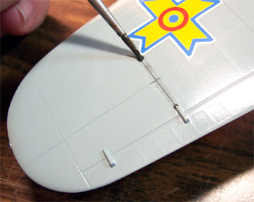
1.) Sludge wash for panel lines. Mix a small amount of acrylic paint, I use Grumbacher paste, with water to achieve a coffee like consistency then add about two drops of liquid soap to break it�s ability to bond. After the model has been completely coated with future or other clear coat and allowed to dry, apply the sludge wash liberally to all panel lines. No need to be neat. Once it has achieved a dried look, only takes a few minutes, take a section of a good quality paper towel and fold into a tight little pad. Dampen slightly and wipe off the model working from the front to the, back top to bottom. This will remove the wash from the top most areas and leave some streaking behind. If you want a cleaner appearance, wipe again or a little harder. The nice thing about this is it accents panel lines and weathers at the same time and if you screw it up you can wash it off and start all over again without destroying the paint job. Seal this step with a coat of Future and proceed to the next step.
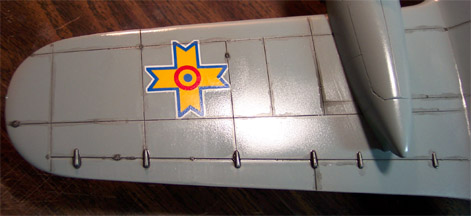
In this picture you can see all the panel lines on this wing have been coated with the sludge wash and it has dried down. So far total elapsed time is about five minutes. While this is drying I'm going to prepare the paper towel. I fold a piece of towel about four times to make a firm pad. Rather than dip the towel into water which would make it too wet, I dip my finger into the water and place a drop on the desk then soak that up with the towel. Then I pinch the towel to get it to flatten out. I want as smooth a surface on the towel as possible so that it will not reach into the depressions on the model and remove the wash in there. I want to only remove the wash from the top-most surfaces.
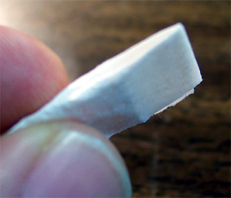
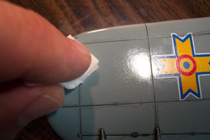
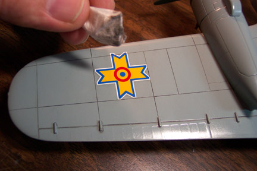
2.) Exhaust stains and gun blast. Tamiya X-19 Smoke is the solution to this. It�s a nice translucent acrylic paint. Thin with some Windex or 50% alcohol and load your airbrush with the finest tip available. Angle the brush to face the rear of the craft and apply in very thin, light coats. The first and possibly even the second coat may not be hardly visible. Build it up in layers until the density that you like is achieved. Allow the paint to dry (10 or 15 minutes) before proceeding.
Next, I'm using some ground up Pastel Chalk and a cotton swab to overlay the Smoke with some dark brown staining. Using my Xacto Knife I shave some chalk off a stick into a pop-bottle top. A dry cotton swab is dabbed into the chalk dust and then brushed across the smoke painted area. Several applications are used to slowly build up color density. A #0 or #1 soft paint brush would work just as well as a cotton swab for this procedure. Once the desired color density has been reached gently blow off the excess chalk dust.
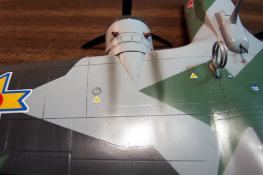 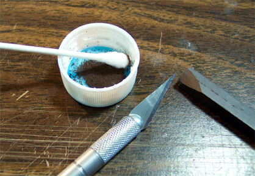 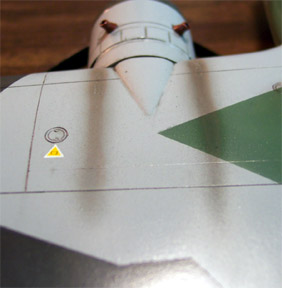
3.) Paint chipping. Many people use silver paint pens to do this but I have never been able to get a satisfactory look. Instead, I take a medium sized paintbrush like a 0 or 1 and chop it off short. Stab the brush end into the table a few times to really mangle it. Take some silver, aluminum or steel paint and dip the mangled brush into it. Gently wipe the brush on a paper towel until nearly dry then stab the leading edges of the wings, prop blades or anywhere else that you want some paint chips. Unlike sludge washing, you can�t wash this one off so try it out on a beater model first to get the hang of it.
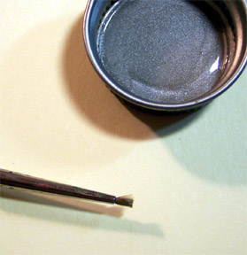 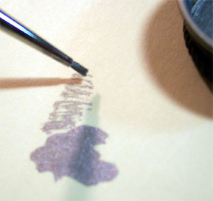 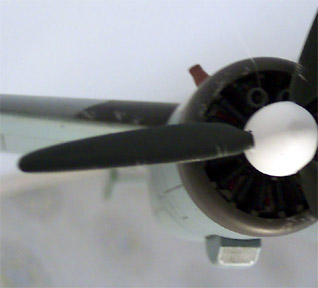
4.) Oil Stains. Archival pens like the Micro pen are great for this. Some modelers use this pen to accent panel lines but I think that the results are too stark. Apply a dot of ink where you want the oil stain to start at, damped (not wet) your fingertip and place on the dot then wipe down (direction of gravity) quickly. This will create a perfect oil stain. In some cases you may want to wipe in the direction of airflow rather than gravity for the stain.
5.) After all weathering has been applied and you are satisfied with the results you may seal everything up with a coat of your favorite topcoat such as Testors Dull Coat or Polly Scale clear flat. The Testors Dull Coat is a lacquer based coating and could cause orange peel if used heavily. The Polly Scale is an acrylic coating and will not react with underlying layers.
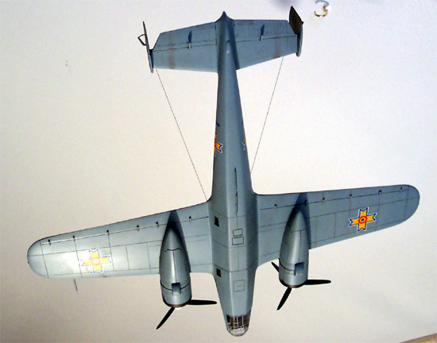 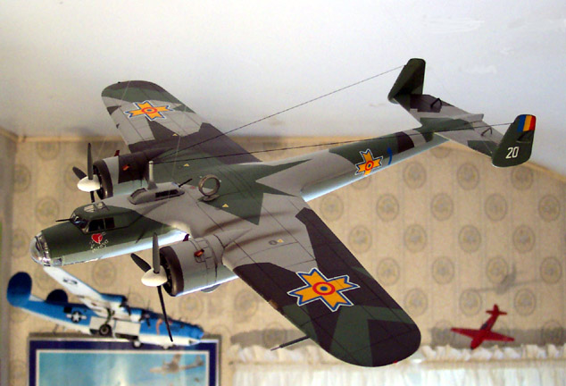
Take note of the picture on the left, the underside of the aircraft. See how I continued the exhaust stain from the inboard exhaust stacks onto the underside of the elevator. This was done with chalks only to create a lighter effect than the heavier stains right at the engine cowlings. In the picture to the right observe how the panel line wash carries across the decal. If you do not have the decals sealed properly before weathering the wash can crawl under the decal and create a real mess. When weathering your aircraft it is important to keep in mind how the air will flow across the craft and it's effect on any weathering material.
There are many other philosophies on weathering out there. These are simply the techniques that I have used and found to work fairly well. I hope that you find them as helpful as I have.